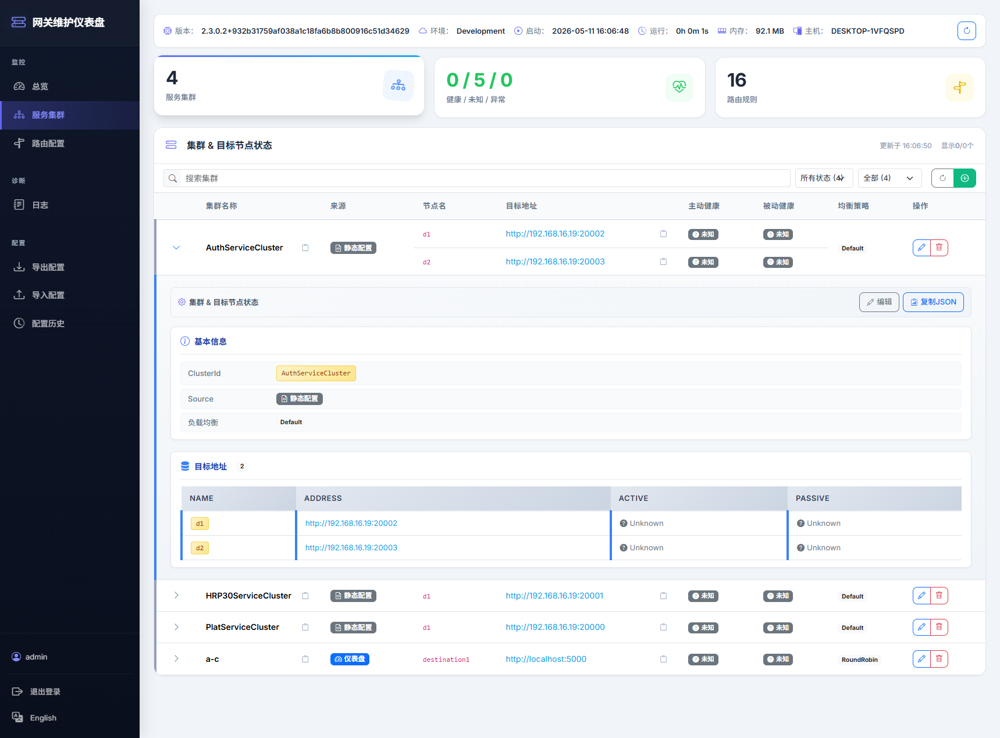
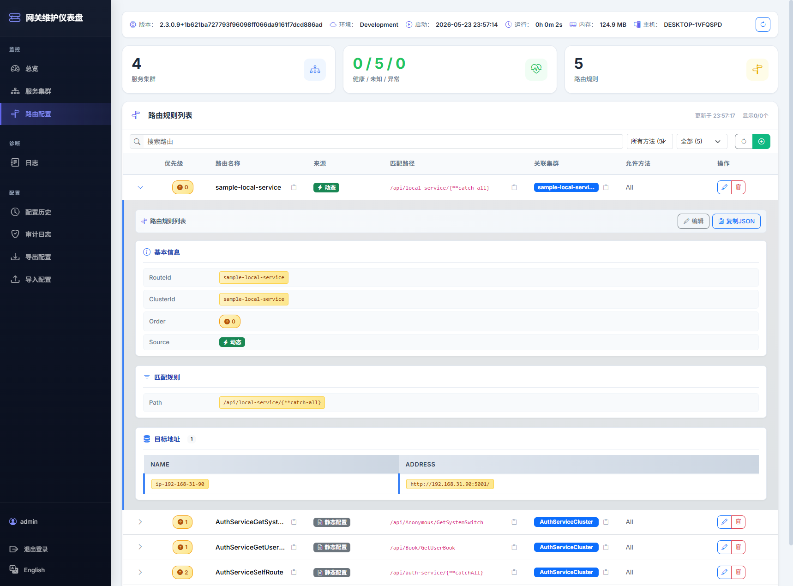
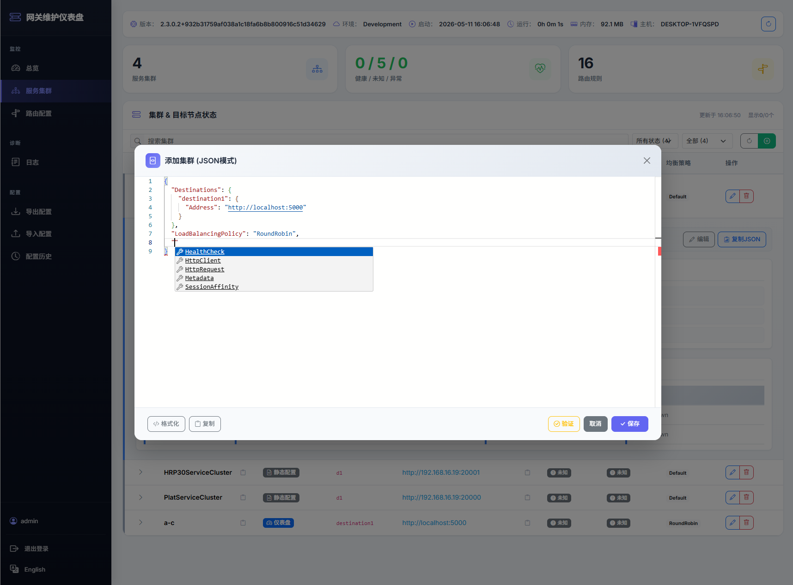
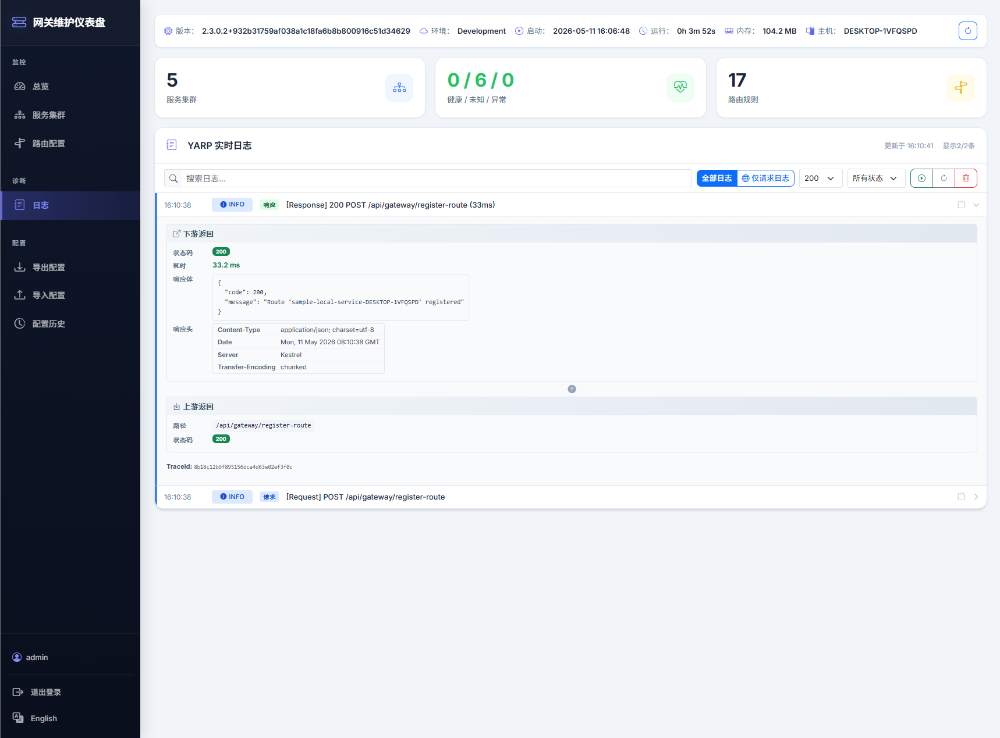
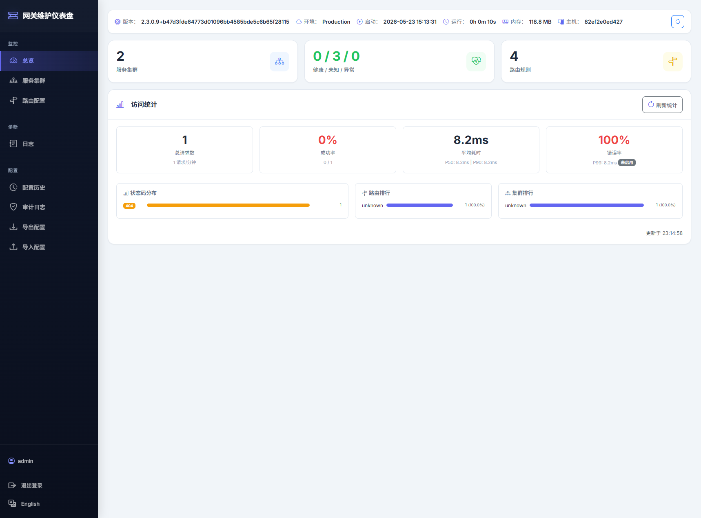

三个 NuGet 包协同工作，解决真实网关痛点
运行时 CRUD 路由与集群，无需重启。双配置源统一，自动持久化到 gateway-dynamic.json，线程安全。
一行代码 AddAneiangYarpClient()，微服务启动自动注册、关闭自动注销。智能推断所有默认值。
多人开发调试利器。同一服务多人并行，网关按客户端 IP 自动路由，前端零感知。
两行代码启用。集群/路由 CRUD、配置导入导出、快照回滚、实时日志、日志脱敏与采样、中英文切换。
None / API Key / JWT（默认 & 自定义）/ 自定义委托。智能凭据推断，少写配置。
导入导出标准 YARP 格式配置。每次变更自动快照，一键回滚到任意历史版本。
两行代码即可拥有的专业管理面板





只需几分钟，搭建完整的 API 网关
dotnet new web -n MyGateway
cd MyGateway
dotnet add package Aneiang.Yarp
dotnet add package Aneiang.Yarp.Dashboardusing Aneiang.Yarp.Extensions;
using Aneiang.Yarp.Dashboard.Extensions;
var builder = WebApplication.CreateBuilder(args);
builder.Services.AddAneiangYarp();
builder.Services.AddAneiangYarpDashboard();
var app = builder.Build();
app.UseRouting();
app.UseAneiangYarpDashboard();
app.MapControllers();
app.MapReverseProxy();
app.Run();dotnet new web -n MyService
cd MyService
dotnet add package Aneiang.Yarp.Clientusing Aneiang.Yarp.Extensions;
var builder = WebApplication.CreateBuilder(args);
builder.Services.AddAneiangYarpClient();
builder.Services.AddControllers();
var app = builder.Build();
app.UseRouting();
app.MapControllers();
app.Run();{
"Gateway": {
"Registration": {
"GatewayUrl": "http://localhost:5000"
}
}
}微服务启动时自动注册到网关，关闭时自动注销。打开 /apigateway 访问 Dashboard 管理面板。
按需引用，依赖关系清晰
客户端自动注册：一行代码接入，启动注册、关闭注销，无 YARP SDK 依赖
dotnet add package Aneiang.Yarp.Client
可视化管理面板：集群/路由 CRUD、配置导入导出、快照回滚、实时日志
dotnet add package Aneiang.Yarp.Dashboard